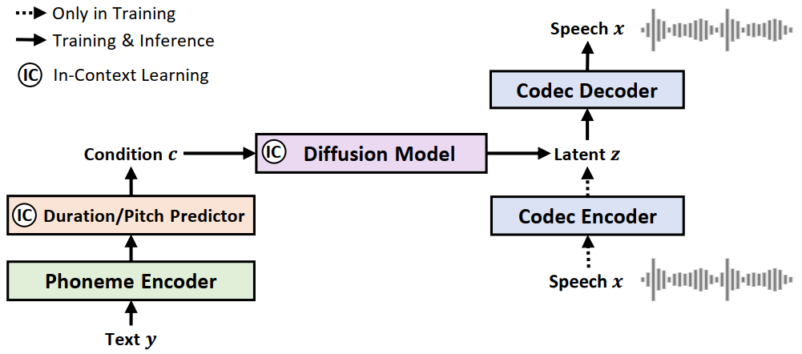
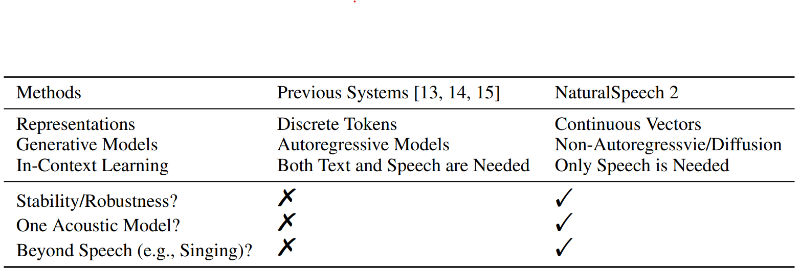

Real-Time Speech Synthesis:
Revealing Consistency Models and Weighted samplers in Neural TTS for Enhanced Efficiency
Anonymous Submission
Anonymous Submission
Abstract.
While text-to-speech (TTS) systems (e.g., NaturalSpeech) have achieved high speech quality on single-speaker recording-studio datasets, these datasets are
not enough to capture the diversity in human speech such as speaker identities, prosodies, styles (e.g., singing). When scaling to large-scale, multi-speaker, and in-
the-wild datasets, current TTS systems usually quantize speech into discrete tokens and use language models to generate these tokens one by one, which suffer from
unstable prosody, word skipping/repeating issue, and poor voice quality. In this paper, we develop NaturalSpeech 2, a TTS system that uses a latent diffusion model
to synthesize natural voices with high expressiveness/robustness/fidelity and strong zero-shot ability. Specifically, we leverage a neural audio codec with residual
vector quantizers to reconstruct speech waveform and get the quantized latent vectors, and then use a diffusion model to generate these latent vectors conditioned
on text input. To enhance the zero-shot capability, we design a speech prompting mechanism to facilitate in-context learning in the duration/pitch predictor and
diffusion model. We scale NaturalSpeech 2 to large-scale datasets with 44K hours of speech and singing data and evaluate its voice quality on unseen (zero-shot)
speakers. NaturalSpeech 2 outperforms previous TTS systems by a large margin in terms of prosody/timbre similarity, robustness, and voice quality, and can perform
novel zero-shot singing synthesis with only a speech prompt.
This page is for research demonstration purposes only.
Overview

NaturalSpeech 2 consists of an audio codec encoder/decoder and a latent diffusion model conditioned on a prior (a phoneme encoder and a duration/pitch predictor).

The comparison between NaturalSpeech 2 and previous large-scale TTS systems.
VCTK Samples
| Text | Ground Truth | DiffGAN-TTS | CM-TTS |
|---|---|---|---|
| It is an amazing response.. | |||
| An appeal against the sentence was dismissed the following year. | |||
| I can't get a job. | |||
| She died in hospital two hours later. | |||
| We're into that build-up now. | |||
| We are not out of touch with politics. | |||
| It's not just going to be busy. | |||
| There is nothing like a fresh start.. | |||
| They will know they deserve to be there.. |
LJSpeech Samples
| Text | Ground Truth | DiffGAN-TTS | CM-TTS |
|---|---|---|---|
| America has produced a good many showy books, the typography, paper, and illustrations of which are, however, all wrong. | Still clings to a foolish, because misunderstood conventionality, deduced from what was once ornament, and is by no means useful. | But these king's witnesses were also put at times into the press yard among the capital convicts, seemingly a very dangerous proceeding. | The prison was always in "the most filthy state imaginable. | No remonstrance was attended to,. | Also to make such proposals as might appear salutary, and calculated to improve newgate and the rest of the city jails. | Confinement for twelve months in the bristol jail was counted a punishment equivalent to seven years' transportation.. |
Zero-shot on VCTK
| Text | Ground Truth | DiffGAN-TTS | CM-TTS |
|---|---|---|---|
| An appeal against the sentence was dismissed the following year.. | |||
| I can't get a job. | |||
| As, indeed, they would be. | |||
| He was good, but not that good. | |||
| The greeks used to imagine that it was a sign from the gods to foretell war or heavy rain. | |||
| It was an amazing result. | |||
| It's not even finished. |
Singing Samples - «Yesterday Once More»
| Lyric | Prompt Type | Prompt | NaturalSpeech 2 |
|---|---|---|---|
| Speech | |||
| Speech | |||
| Singing |
Voice Conversion Samples
| Text | Prompt | Source | NaturalSpeech 2 |
|---|---|---|---|
| Traditions to overcome. | |||
| The children the most blood-curdling ideas, to hate God, for instance. | |||
| Oh, Bartley, that old about my being hard! |
Speech Enhancement Samples
| Prompt | Source | Ground Truth | NaturalSpeech 2 |
|---|---|---|---|
Ethics Statement
Since NaturalSpeech2 could synthesize speech that maintains speaker identity, it may carry potential risks in misuse of the model, such as spoofing voice identification or impersonating a specific speaker. We conducted the experiments under the assumption that the user agree to be the target speaker in speech synthesis. If the model is generalized to unseen speakers in the real world, it should include a protocol to ensure that the speaker approves the use of their voice and a synthesized speech detection model.